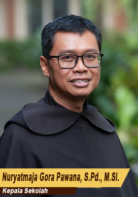

Komunitas pendidikan Katolik yang dijiwai Spiritualitas Karmel — doa, pelayanan, dan persaudaraan — untuk menumbuhkembangkan generasi dewasa dan berkebinekaan.

Nuryatmaja Gora Pawana, S.Pd., M.Si. Kepala Sekolah"Pendidikan sejati tidak hanya mencerdaskan pikiran, tetapi juga membentuk hati dan karakter generasi yang bertanggung jawab."
Puji syukur kepada Tuhan Yang Maha Esa atas segala rahmat yang dilimpahkan kepada kita semua. Selamat datang di laman resmi SMA Katolik Santo Paulus Jember.
Sebagai sekolah yang menghayati Spiritualitas Karmel, kami membangun komunitas belajar yang berakar pada doa, pelayanan, dan persaudaraan. Ketiga nilai ini bukan sekadar slogan, melainkan cara hidup yang kami wujudkan setiap hari — di dalam kelas, di lapangan, maupun di tengah masyarakat.
Kami mengundang seluruh keluarga besar SMAK Santo Paulus — siswa, orang tua, guru, dan alumni — untuk bersama-sama mewujudkan pendidikan yang utuh, yang memanusiakan setiap pribadi sesuai dengan keunikan dan potensinya masing-masing.
SMAK Santo Paulus Jember menjadi komunitas pendidikan Katolik yang dijiwai Spiritualitas Karmel (doa, pelayanan dan persaudaraan) untuk menumbuhkembangkan kaum muda menjadi pribadi yang utuh, dewasa, berkarakter, dan berkebinekaan.
Merupakan lembaga pendidikan ko-edukasional yang menghayati tradisi Karmelit dan memberikan layanan pendidikan terbaik setingkat SMA bagi murid dalam ciri khas pendidikan Katolik.
Menerapkan, memfasilitasi, dan mengakomodasi kebutuhan belajar peserta didik sesuai bakat, minat, dan kecepatan belajar yang beragam.
Menghargai dan mengembangkan peserta didik menjadi pribadi yang utuh, dewasa, dan berkarakter melalui kegiatan intrakurikuler dan ekstrakurikuler.
Mewujudkan lulusan yang unggul dalam literasi, numerasi, keterampilan abad 21, penalaran, serta karakter religiositas, nasionalisme, gotong royong, kemandirian, dan integritas.
Mendidik murid untuk menghargai diri sendiri, masyarakat, dan lingkungan hidup di setiap proses pendidikan.
Bekerja sama dengan orang tua/wali murid dan alumni untuk memfasilitasi kreativitas dan inovasi murid dalam berbagai kegiatan yang positif.
Bekerja sama dengan orang tua/wali murid, pemerintah, dan stakeholder lainnya dalam pelaksanaan program dan pelayanan kepada kelompok KLMTD.
Mengembangkan sikap nasionalisme, kebinekaan dalam kesetaraan, dan mewujudkan dialog interkultural.
Mengembangkan profesionalisme tenaga pendidik dan kependidikan melalui supervisi, monitoring, dan pengembangan kompetensi berkelanjutan.
Mewujudkan pengelolaan sekolah yang efektif, efisien, dan akuntabel.
Mewujudkan fasilitas dan lingkungan sekolah yang sehat, aman, nyaman, dan berteknologi tinggi bagi seluruh warga sekolah.